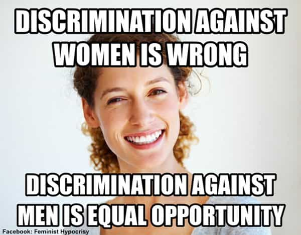
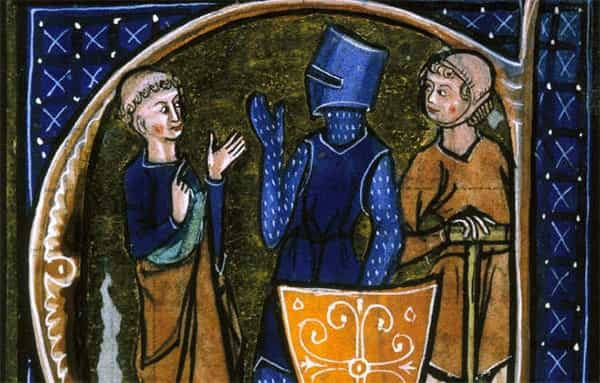

André is a young European who left his decaying country in 2012 for greener pastures. He enjoys exploring subterranean places, reading about a host of interconnected topics, and yearns for Tradition.


According to official academics, the Law Code of Manu is a legal document produced around the second or third century BC in India. It has been created in a context of discord between castes, mostly used so that the first two castes of the Hindu four-castes order would keep cooperating with an advantage for the Brahmin—clerics, priests, teachers—over the Kshatriya—warriors, administrators, royalty—in a peculiar caste-ordered civilization.
If one follows such a historicist, everything-comes-from-human-whims view, the Law Code of Manu can only be relevant to nerdy Sanskrit scholars who made themselves a niche in the academic market and perhaps to jurists looking for some exotic literature within their field. To any other, it is just a culturally alien, dusty, and uninteresting pile of words. You’d better follow what is going on during The Current Year from mainstream, establishment-approved sources.
Of course, my approach here is quite different, otherwise I wouldn’t have written this piece. Ancient India is one of the oldest civilized societies known and features a religion perhaps closer to the “source” of them all than the later ones we are more familiar with. Hinduism, far from being limited to a children tales-like mythology, superstition, or New Age feel-good bullshit, features rich concepts such as the dharma—to which I devoted a ROK piece—that bear analogy with later ones, like the Greek dikē or cosmos, or the Jewish tsedek (loosely, “justice”).
This is what the Law Code of Manu stems from: a traditional society, crossed with a spiritual and perhaps intellectual vivacity that isn’t ours anymore, that stood the test of time, and that features a rather refreshing point of view compared to the floating fashions of today. Precise and wide, the Code covers a wide range of areas with minimal jargon and, as you will see, has few if anything in common with the strange tribes that disproportionately enticed matriarchy or exoticism-seeking anthropologists. In my opinion, it can be compared to the Jewish mitsvot (“commandments”), in that most of these cannot be applied anymore in modern societies, but remain an important source of landmarks and inspiration.
After a brief account of the Creation of the world and humans, the Code starts by stating the roots of the Law in general and tackling the consecratory rites. These topics go hand in hand, as only someone properly initiated—along with other conditions—appears qualified to understand and tell what has to be. Yet they also reach far beyond the world of jurists: in a traditional society, everyone had rites of passage to go through according to one’s specific identity.
It has been noticed here that a society lacking initiatory rites produces immature, incomplete, frail and jaded people. Many men from the 60s and the 70s are cowards and conformists who keep themselves subjugated by cultural Leftism. We, millenials, never had the security, wealth and access to sex they enjoyed, still we may be better off as we have at least our own initiatory rites. Taking the red pill stands as one, game practice as another. These “rites” of ours make us abler, stronger, more in touch with “disturbing” but highly important reality than grey-headed wimps. As the Manu Code states clearly, those who were able to stand the rite are actualized by it, to the point that some are “twice-born.”
A recurring theme in the Law Code is purity. Before performing a rite or formal prayer, one should take an ablution and clear one’s mind of random thoughts and negative emotions. Eating inappropriate food, associating with criminals or outcasts is considered tainting. When one “sins”, one should undergo a penance, not because he has been forced to do so but as to get “clean” for the taint.
We were told most past taboos were “oppressive” and bound to be superseded. The Victorian taboo on sex would be of an “inferior” society compared to our “emancipated” one. Thus, the only purity acceptable would be the medical one—wash your hands before eating—as all else would be ultimately ungrounded.
In an irony of history, the Leftist establishment has become incredibly puritan in its own right: believe in Gender Equality, Progress, Rape Culture, Global Warming and other idols; avoid –isms and –phobias; buy Fair Trade; eat organic… Behind their veneer of hipsterism, bourgeois bohemians are incredibly prudish and obsessed with purity, especially on the ideological plane. To us, such puritanism looks like a big matrix, a false setting where norms and judgments take us away from reality and instill us with wrong fears and judgment criteria.
Where the Leftist “puritan” sees sacrilege (“WHAT? WOMEN ARE HYPERGAMIC? OMFG THIS IS CISHET MANSPLAINING SEXIST SEXISM!”), we see awareness. This does not mean that caring about purity is always bad. The question is, whether this or that can be rightly considered pure or not, and if we are in touch with a proper sense of cleanliness inside ourselves.
Girls who made themselves ugly and get their holes rammed by massive amounts of dick are entitled to elicit repulsion. Likewise, many of whom we call racailles (“scum”) in French are dirty in various senses—they smoke bad weed, are drug addicts, seem unable to speak without shouting or scorching the French language through an ugly, repulsive accent; they deal with illegal trades which entail selling unhealthy products, defrauding customers, robbing, they act like parasites and are proud of it, they often feel bad emotions against almost everything, and even lack basic hygiene. Do considering such people dirty and tainted make us “bigoted”?
Of course, the purity mentioned in the Code is genuine in the sense that it is not about virtue-signaling or displaying signs of purity whereas one would be “unclean” or messes up inside. A true Brahmin is by no means a Pharisaic, and no one else should be.

The Bible devotes at least two chapters (Mathew, 6-7) to exposing those who turn their virtuous acts into a public show and values actions made without testimony. People ought to seek the good for itself, not for getting social rewards or participating into a play. Just like the Bible—actually, a bit less, perhaps because hypocrisy was less rampant in ancient India than in first century Judea—the Manu Law condemns social dishonesty:
A man who always displays the banner of righteousness and yet is greedy and deceitful, who deludes the world, who is given to violence, and who beguiles everybody should be viewed as one who observes the ‘cat-vow’. A twice-born who goes around with downcast eyes but is cruel, given to furthering his own ends, crooked, and being falsely sanctimonious, is a man who is observing the ‘heron-vow’… After committing a sin, [one] must never perform a penitential observance under the pretext that [one] is doing a meritorious act, thus covering up his sin with his observance and deceiving women and Shudra. (4.195-8)
If being polite with people you loathe is hypocrisy, then so be it. Dissimulating one’s feelings and thoughts is often necessary for social life, although one could argue that this necessity alone is a sign of degeneracy. However, being committed to one’s interests at the expense of everyone else’s and posing as generous, as socialists typically do, should be deemed unacceptable and clearly denounced. Doubtlessly, the massive hypocrisy of the currently powerful bears an important relation with the present state of the West.

The Hindu society, just like other Indo-European societies up to medieval Europe, is organized upon superimposed castes. The Brahmin have the highest authority by virtue of their “primogeniture” and superior learning, the Kshatriya are the ones who risk their life over the battlefield and are fit to political power out, the Vaishya are these free men who deal in trade, agriculture and craftsmanship, and the Shudra mostly serve the three other castes.
On an individual level, these castes are justified by the vocation or proper dharma of every individual: one is made, say, a Vaisya or a Kshatriya from the start, and could not change his caste without turning into another person. Some vocations are higher than others and should be acknowledged as such.
Most ROK readers should find the idea of vocation intuitive. Women have purposes specific to their sex and should not attempt to steal or destroy manly places. However, the caste hierarchy and relative levelling of vocations may seem extraneous to American readers: the US were founded over the idea that neither a centralized Church nor a nobility should exist. Did not the Founding Fathers reject the caste system from the start? Indeed—but I am neither American nor conservative enough to put them on the same footing than sacred texts.

A hierarchy where manly men have authority over feminine women works well. Each one has a role fit to its nature and can realize one’s own purposes with the help of the other. An inverted, matriarchal hierarchy where women would rule, on the other hand, is dissatisfying: women would look like caricatures of men by being bossy, let their defects such as conformism and group-thinking tendency express, and turn men into slaves or short-term driven pleasure-seekers. None of the parts would be able to realize its better tendencies, such as loving and caring for women, or meeting with challenges for men.
Likewise, the four-caste hierarchy is supposed to be the better or fairer one. A society following it and having proper individuals at each level would be the most harmonious one, even in poverty. When the regular order gets messed up, so does the whole society: Kshatriya pretending to spiritual authority start subordinating it to political interests, just as the Protestant princes of Europe did in the sixteenth century; Vaishya pretending to power end up commercializing everything, turning politics into a marketplace where lobbyists and sellouts abound. “Inferior” castes cannot help but bring their essential ethos with them no matter where they go or what they pretend to be.
The lesson, here, could be that modernity has been mostly synonymous with a “vaishya-ization” of society: universities have turned into an academic niche market, politics have become a market as well, and the process have been aggravated by women trying to play men—especially upper bourgeois women pretending to political power. Each “inferior” caste denying the “superior” ones their rights and special prerogatives have made the world poorer.
As for myself, I have no problem with the idea that some, even men, should not be entitled to financial independence: libertarianism may work well among members of Mensa, but 70-IQ people clearly need some paternalist management not to drown into their own stupidity.
“Even a capable Shudra must not accumulate wealth, for when a Shudra becomes wealthy, he harasses Brahmins.” (10.129) Some wealthy people fund seditious, divisive groups such as BLM, some who enjoy a small authority act like power-tripping assholes, some women get beta orbiters and management power… A fair hierarchy is not one with equal chances or opportunities to get promoted, but one where each one can reach his rightful place.
Alt-Right blogger Lawrence Murray contrasted Buddhism, which enjoys some cultural status and association with the upper classes in the West, with an “intensely alien Hinduism.” Practicing yoga, reciting a handful of mantra and mingling with other bourgeois bohemian while sipping fair trade green tea seems indeed easier than vindicating such a frankly non-modern order.
Modernity in general and the so-called American Dream in particular entertain a deep trend of anti-traditional, anti-dharmic thinking which promotes an abstract and formally autonomous individual able to do has he wants. “Gender” or the negation of biological sex in the name of a chosen or psychological sex is but the last product of the trend.
If you could choose between a society where Hillary Clinton had won the election and a society with castes and sacred fires, would you have the guts to choose the second option—knowing that women would be women but also that you may be, say, a Vaishya and thus not entitled to (for example) give a scholarly opinion about what the Bible says?
Whatever your answer, remember that modern ethical theories come and go with the Zeitgeist, whereas dharmic cultures still exist today side by side with modern technology. I could bet anything that in a hundred years the Law Code of Manu will still be studied while Anita Sarkeesian’s name will be forgotten.
Read Next: The Dysfunction Of Modern Society Is Proof That Cultural Marxism “Works”